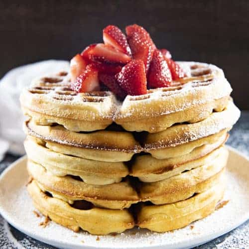

Featured Recipe - Belgian Waffles
Credit goes to thesaltymarshmallow.com
Waffles are a great classic breakfast food. Brighten up your morning with these fluffy and delicious Belgian Waffles are a great way to start your day.
Ingredients Needed
Make sure you have the following on hand before you begin.
- 2 1/4 Cups All Purpose Flour
- 1 Tbsp Baking Powder
- 3 Tbsp Sugar
- 1/2 Tsp Salt
- 1 Tsp Cinnamon
- 2 Large Eggs Separated
- 1/2 Cup Vegetable Oil
- 2 Cups Milk
- 1 Tsp Vanilla Extract
Instructions
Follow the instructions carefully for a delicious meal. Take your time and you will be rewarded.
- Whisk together your dry ingredients.
- Separate your egg whites from the yolks.
- Mix all of your wet ingredients except for the egg whites together and combine them with the dry ingredients.
- Beat your egg whites in their bowl until stiff peaks form.
- Use a spatula to fold the egg whites into the batter. (Don't over stir.)
Now all that is left for you to do is serve and enjoy.